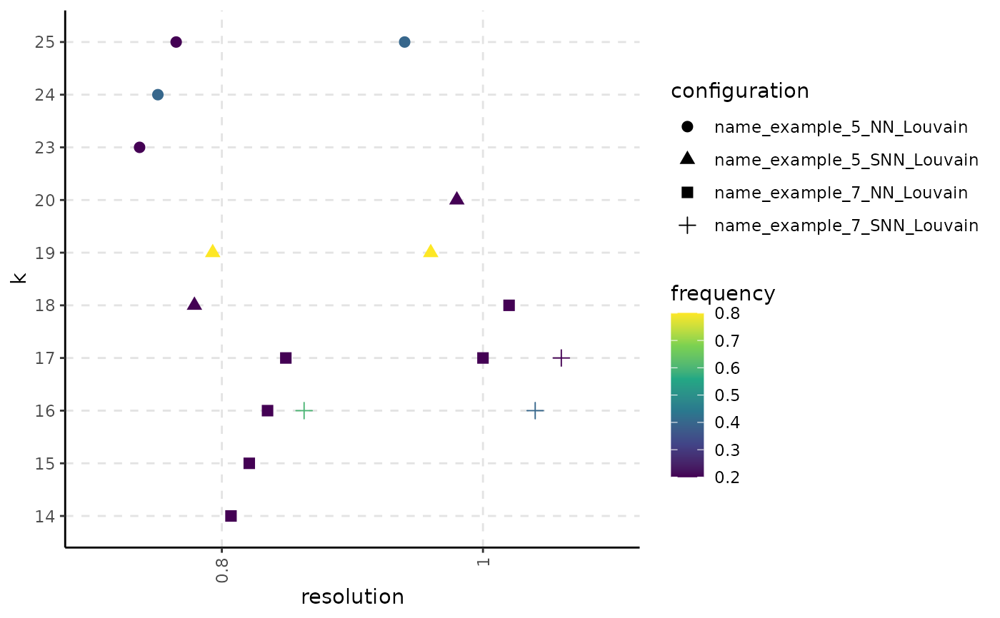

R/stability-based-parameter-assessment.R
get_resolution_importance.RdPerform a grid search over the resolution, number of neighbors and graph type.
get_resolution_importance(
embedding,
resolution,
n_neigh,
n_repetitions = 100,
seed_sequence = NULL,
clustering_method = 4,
graph_type = 0,
object_name = NULL,
ecs_thresh = 1,
ncores = 1
)The base embedding for the graph construction.
A sequence of resolution values.
A value or a sequence of number of neighbors used for graph construction.
The number of repetitions of applying the pipeline with different seeds; ignored if seed_sequence is provided by the user.
A custom seed sequence; if the value is NULL, the sequence will be built starting from 1 with a step of 100.
An index or a list of indexes indicating which community detection
algorithm will be used: Louvain (1), Louvain refined (2), SLM (3) or Leiden (4).
More details can be found in the Seurat's FindClusters function.
Argument indicating whether the graph should be unweighted (0), weighted (1) or both (2).
User specified string that uniquely describes the embedding characteristics.
The ECS threshold used for merging similar clusterings.
The number of parallel R instances that will run the code. If the value is set to 1, the code will be run sequentially.
A list having two fields:
split_by_resolution: A five-level list. The hierarchy is as follows:
the configuration name: concatenation between the object name provided by the user, the number of neighbors, the graph type and the clustering method
the resolution value \(\gamma\)
the number of clusters k that can be obtained using the specified resolution
a partitions field containing the partitions obtained with resolution \(\gamma\) and have k clusters
along with a ecc field that contains the Element-Centric Consistency of the partition list
the structure of a partition, which consists in having a mb field with
the flat membership vector, freq denoting its frequency and seed, that is
the seed used to obtain this partition in this configuration.
split_by_k: has a similar structure, but the resolution level is removed. The partitions obtained in a configuration with the same number of clusters will be merged into the same list.
set.seed(2021)
# create an artificial expression matrix
expr_matrix = matrix(runif(500*10), nrow = 500)
# get the PCA embedding of the data
pca_embedding = irlba::irlba(expr_matrix, nv = 2)
pca_embedding = pca_embedding$u %*% diag(pca_embedding$d)
rownames(pca_embedding) = as.character(1:500)
# run the function on the pca embedding
resolution_result = get_resolution_importance(embedding = pca_embedding,
resolution = c(0.8, 1),
n_neigh = c(5, 7),
n_repetitions = 5,
clustering_method = 1,
graph_type = 2,
object_name = "name_example")
plot_k_resolution_corresp(resolution_result)
